P01Vertical Ember Vault scale; Elian and Mira cross a single chain bridge above the geothermal void.
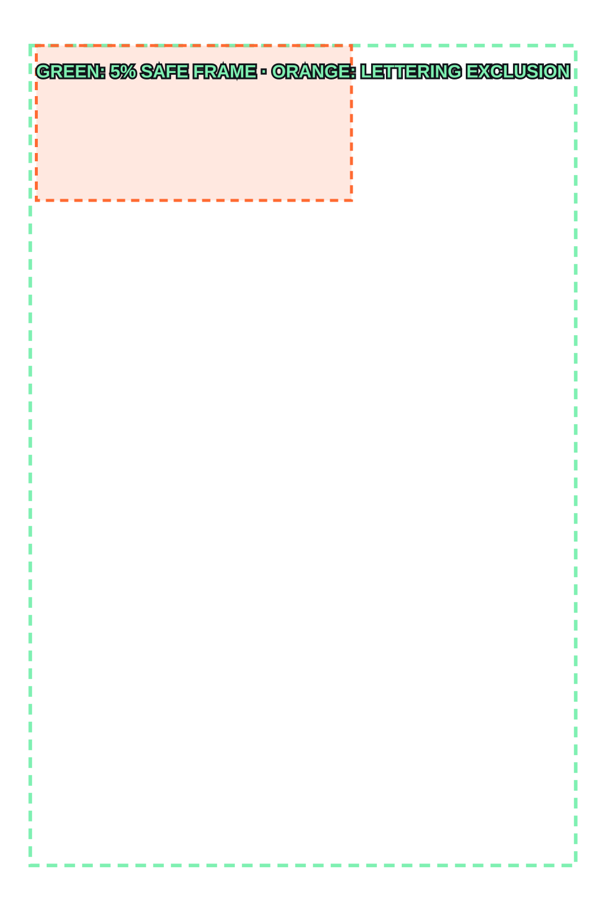
P02Elian pauses in profile; starting status and quest become visible locally.
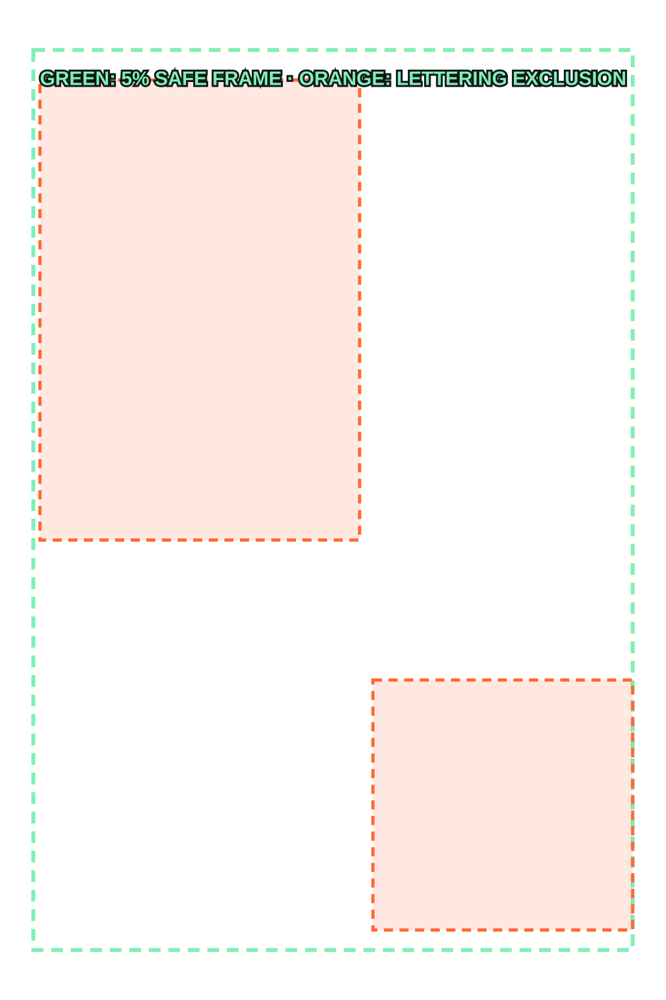
P03Short dry exchange establishes adult partnership and bridge instability.
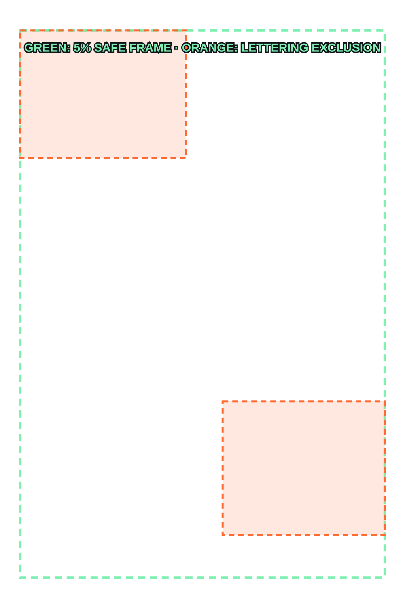
P04Belljaw Warden climbs onto the far platform; threat legible before combat.
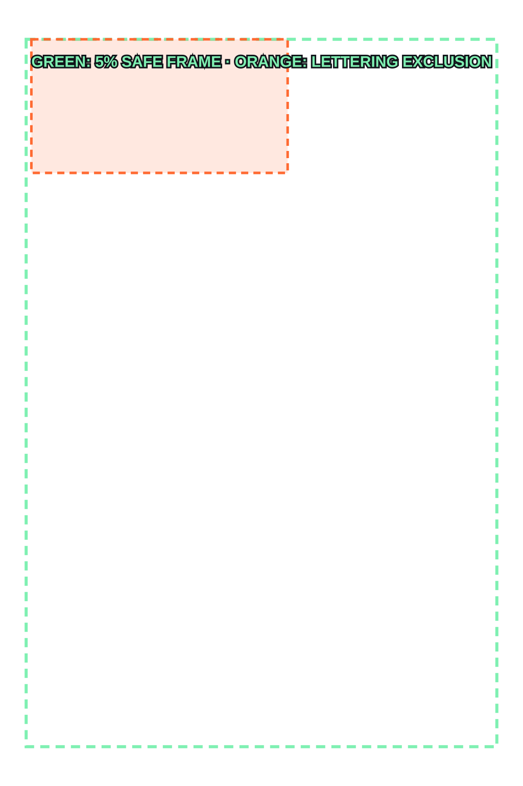
P05Geography: boss at right bridge mouth, Mira center-left, Elian behind, one intact anchor.
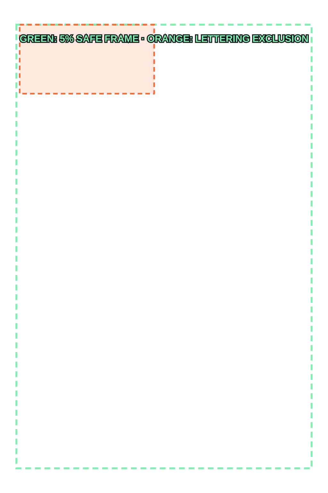
P06Belljaw charges right-to-left; bridge boards kick upward behind foreclaws.
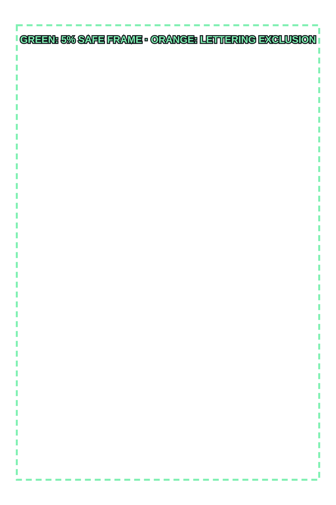
P07Mira plants split shield and drives spear to redirect the charge.
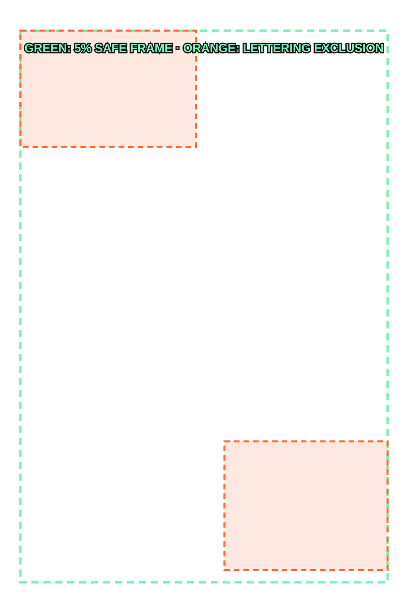
P08Boss clamps Mira's spear and wrenches it sideways; her planted foot skids.
P09Elian activates Fault Sight; one orange line reveals the ankle fault while Mira holds orientation.
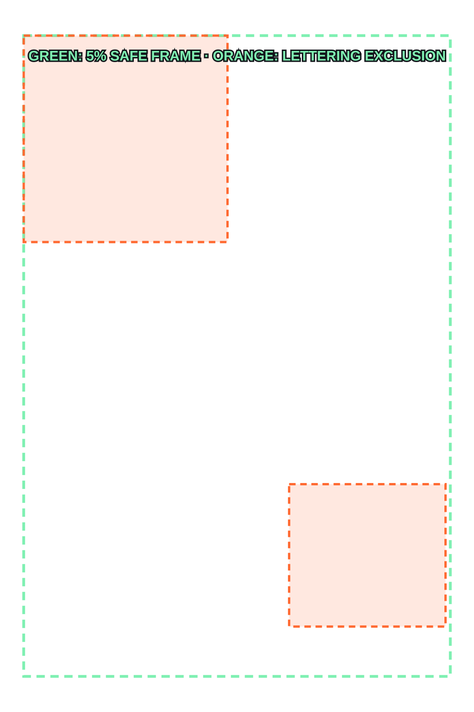
P10Elian slides left-to-right beneath the jaw using chain rail as a step.
P11Boss forelimb backhands Elian into a hanging chain before his strike lands.
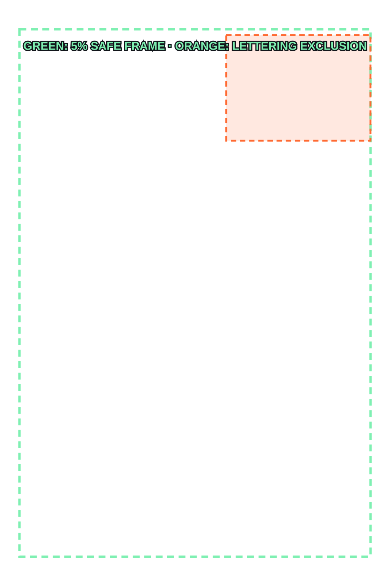
P12Quiet suspended consequence; Elian grips chain, rib injured, Breath Seed bottleneck closed.
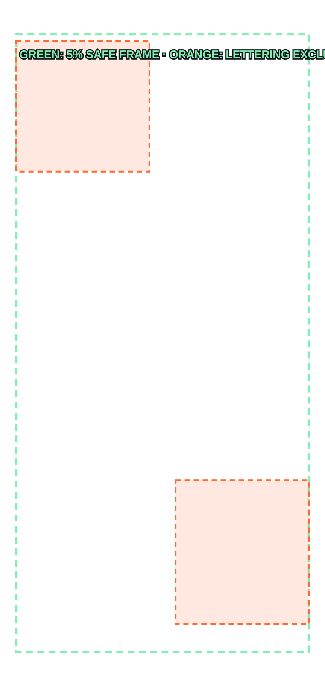
P13Inventory decision: Elian crushes the only Spark Talisman rather than spend an Iron Seal needed for the bridge.
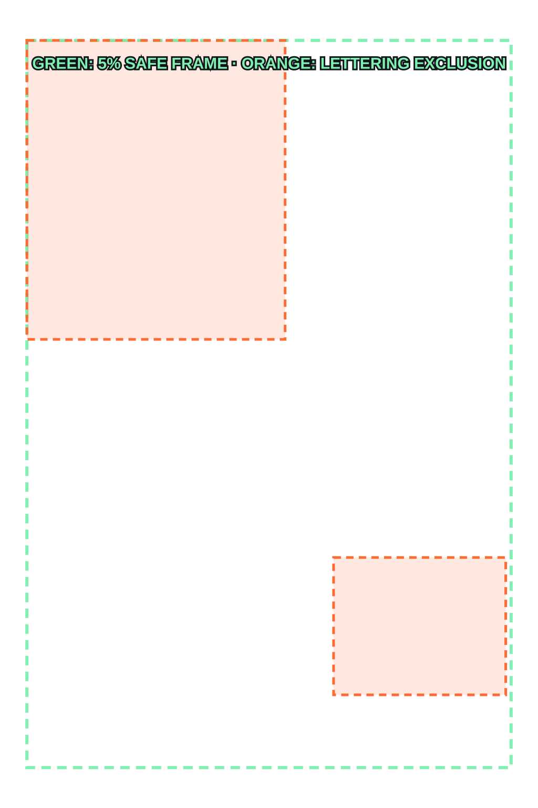
P14Danger-earned breakthrough: Breath Seed II opens, Fault Step I unlocks, Elian coils to launch.
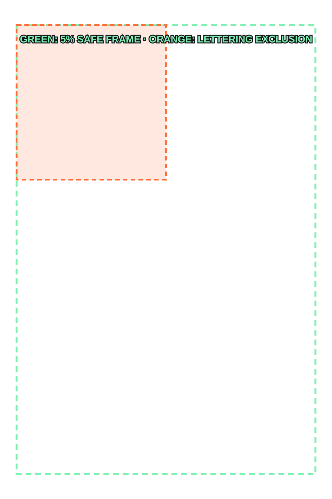
P15Spectacle payoff: Mira pins jaw with shield-spear while Fault Step launches Elian bottom-to-top through ankle seam.
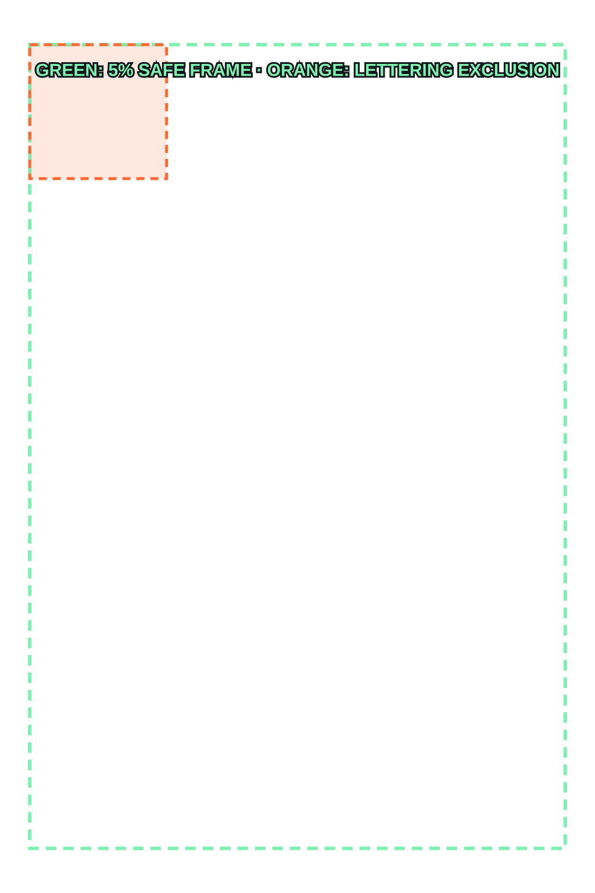
P16Boss collapsed; adults sit/stand in quiet aftermath; XP, level, loot, class unlock, and quest completion reconcile.
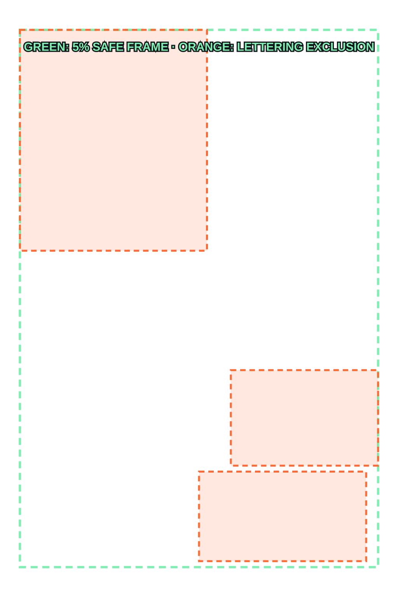